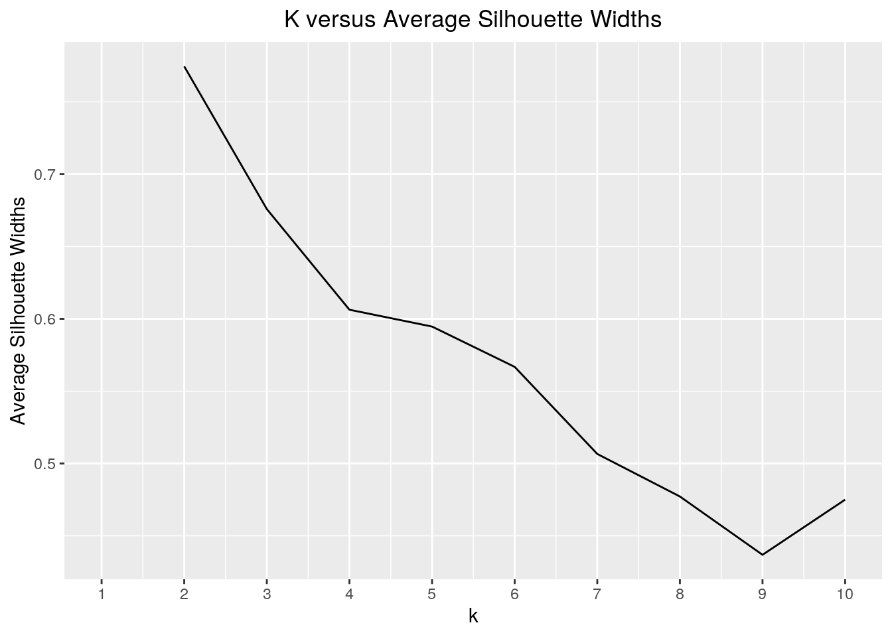

library(tidyverse)
library(readr)
library(dplyr)
library(ggplot2)
options(scipen = 99)
MovieBudget <- read_csv("MovieBudget.csv")
MovieRatings <- read_csv("MovieRatings.csv")
MovieJoin <- MovieBudget %>% distinct(title, .keep_all = T) %>%
rename(name = title) %>% right_join(MovieRatings, by = "name")
MovieJoin2 <- MovieJoin %>% select(-runtime.x)
MovieJoin2 <- MovieJoin2 %>% select(-status)
MovieJoin2 <- MovieJoin2 %>% select(-original_title)
MovieJoin2 <- MovieJoin2 %>% na.omit
MovieJoin2 <- MovieJoin2 %>% select(-popularity)
MovieJoin3 <- MovieJoin2 %>% filter(!revenue == 0 & !budget ==
0)
MovieJoin3 <- MovieJoin3 %>% filter(budget >= "1000")
MovieJoin3 <- MovieJoin3 %>% filter(revenue >= "1000")
"%ni%" <- Negate("%in%")
MovieJoin3 %>% group_by(genre) %>% count() %>% arrange(n)## # A tibble: 14 x 2
## # Groups: genre [14]
## genre n
## <chr> <int>
## 1 Thriller 1
## 2 Family 3
## 3 Romance 4
## 4 Sci-Fi 8
## 5 Fantasy 18
## 6 Mystery 21
## 7 Horror 143
## 8 Biography 174
## 9 Animation 187
## 10 Adventure 209
## 11 Crime 243
## 12 Drama 557
## 13 Action 841
## 14 Comedy 869GenreMJ <- MovieJoin3 %>% filter(genre %ni% c("Thriller", "Family",
"Romance", "Sci-Fi", "Fantasy", "Mystery"))I used a right-join to combine the MovieBudget and MovieRatings datasets into MovieJoin to preserve all variables. The MovieRatings dataset had significantly fewer observations, so I used a right-join by movie name to eliminate rows in MovieBudget that were not present in MovieRatings. The right-join eliminated 38,646 observations to form a combined dataset with 6,820 observations.
After joining, I removed extraneous, repetitive variables along with rows containing NA values. I also removed movies with low revenue and budget values that were falsely reported-- for example, movies with budgets of 1 dollar. Lastly, I removed movies categorized into genres with small overall counts. The final dataset, GenreMJ, contains 3223 observation and 11 variables. The removal of observations limits the scope of the project analysis and is not representative of all movies on IMDb; however, these measures were taken to simplify important variables of study within this project: budget, revenue, and genre.
GenreMJ %>% summarise_if(is.numeric, mean)## # A tibble: 1 x 6
## budget revenue runtime.y score votes year
## <dbl> <dbl> <dbl> <dbl> <dbl> <dbl>
## 1 39731977. 116100005. 109. 6.48 118164. 2004.GenreMJ %>% summarise_if(is.numeric, sd)## # A tibble: 1 x 6
## budget revenue runtime.y score votes year
## <dbl> <dbl> <dbl> <dbl> <dbl> <dbl>
## 1 43231380. 186534215. 18.8 0.995 166122. 8.30The mean budget for movies in the dataset is 39,731,977 dollars, and the mean revenue is 116,100,005 dollars. The mean runtime is 109.362 minutes, and the mean user-given score is 6.478. The mean number of votes given by IMDb users for each movie is 118164.3, and the mean year in which movies were created is 2004.
The standard deviation (sd) in budget for movies in the joined dataset is 43,231,380 dollars, and the sd in revenue is 186,534,215 dollars. The sd in runtime is 18.82 minutes, and the user-given scores have an sd of 0.995. The number of votes on IMDb for movies deviated by 166,121.7, and the years in which movies were created deviated by 8.30.
GenreMJ %>% filter(score == max(score)) %>% select(name)## # A tibble: 1 x 1
## name
## <chr>
## 1 The Shawshank RedemptionGenreMJ %>% group_by(genre) %>% summarise(mscore = mean(score)) %>%
arrange(desc(mscore))## # A tibble: 8 x 2
## genre mscore
## <chr> <dbl>
## 1 Biography 7.16
## 2 Crime 6.95
## 3 Drama 6.84
## 4 Animation 6.79
## 5 Adventure 6.56
## 6 Action 6.24
## 7 Comedy 6.23
## 8 Horror 5.79GenreMJ %>% group_by(rating, country) %>% summarise(ms = mean(score)) %>%
arrange(desc(ms))## # A tibble: 102 x 3
## # Groups: rating [8]
## rating country ms
## <chr> <chr> <dbl>
## 1 UNRATED India 8.7
## 2 PG-13 Italy 8.6
## 3 PG Iran 8.4
## 4 R Brazil 8.35
## 5 PG-13 India 8.2
## 6 R Argentina 8.2
## 7 NOT RATED South Korea 8.1
## 8 PG-13 West Germany 8.1
## 9 NOT RATED India 8.07
## 10 PG India 8
## # … with 92 more rowsThe movie with the highest score based on IMDb user votes was Shawshank Redemption, which a score of 9.3. When grouped by genre, Biographies has the highest mean score of 7.16, and Horror has the lowest mean score of 5.80. When grouped by both country and rating, Unrated movies from India have the highest mean score of 8.7, and PG-13 movies from South Korea have the lowest mean score of 3.6.
GenreMJ %>% group_by(genre) %>% summarise(mr = mean(revenue)) %>%
arrange((mr))## # A tibble: 8 x 2
## genre mr
## <chr> <dbl>
## 1 Crime 59253394.
## 2 Horror 60597699.
## 3 Drama 67272070.
## 4 Biography 71136717.
## 5 Comedy 71246150.
## 6 Action 174082771.
## 7 Adventure 191004154.
## 8 Animation 283644685.GenreMJ %>% mutate(net = revenue - budget) %>% filter(net ==
max(net)) %>% select(name)## # A tibble: 1 x 1
## name
## <chr>
## 1 AvatarThe movie genre with the greatest mean revenue is Animation and the lowest is Crime. The film with the greatest net profit, the difference between revenue and budget, is Avatar.
GenreMJ %>% select(country) %>% count(country) %>% arrange(desc(n))## # A tibble: 39 x 2
## country n
## <chr> <int>
## 1 USA 2649
## 2 UK 285
## 3 France 65
## 4 Germany 37
## 5 Canada 30
## 6 India 18
## 7 Spain 17
## 8 Australia 16
## 9 Japan 16
## 10 Ireland 12
## # … with 29 more rowsGenreMJ %>% group_by(genre) %>% summarise(mrt = mean(runtime.y)) %>%
arrange(desc(mrt))## # A tibble: 8 x 2
## genre mrt
## <chr> <dbl>
## 1 Biography 123.
## 2 Drama 116.
## 3 Crime 115.
## 4 Adventure 115.
## 5 Action 112.
## 6 Comedy 103.
## 7 Horror 97.3
## 8 Animation 92.2GenreMJ %>% group_by(country) %>% summarise(mv = mean(votes)) %>%
arrange(desc(mv))## # A tibble: 39 x 2
## country mv
## <chr> <dbl>
## 1 New Zealand 528358.
## 2 Brazil 305391
## 3 South Africa 194639
## 4 Argentina 149747
## 5 Sweden 141918.
## 6 China 137917.
## 7 Spain 124429.
## 8 USA 121716.
## 9 UK 114764.
## 10 Australia 105586.
## # … with 29 more rowsThe most represented country in the dataset is the USA, which accounts for 2649 of the observations. Animation films have, on average, the lowest runtimes while Biographies have the highest mean runtime. When grouped by country, movies from New Zealand have the highest mean number of votes on IMDb.
GenreMJ %>% group_by(genre) %>% summarise_if(is.numeric, c(mean,
sd, var, min, max)) %>% pivot_longer(contains("_")) %>% separate(name,
sep = "_", into = c("variable", "summarystat")) %>% pivot_wider(names_from = "variable",
values_from = "value") %>% mutate(summarystat = recode(summarystat,
fn1 = "mean", fn2 = "sd", fn3 = "var", fn4 = "min", fn5 = "max"))## # A tibble: 40 x 8
## genre summarystat budget revenue runtime.y score votes year
## <chr> <chr> <dbl> <dbl> <dbl> <dbl> <dbl> <dbl>
## 1 Action mean 6.38e 7 1.74e 8 112. 6.24 151843. 2003.
## 2 Action sd 5.59e 7 2.47e 8 17.4 0.976 187747. 8.59
## 3 Action var 3.12e15 6.09e16 304. 0.952 35249069440. 73.9
## 4 Action min 7.00e 0 5.00e 0 75 2 368 1986
## 5 Action max 3.80e 8 2.79e 9 187 9 1839571 2016
## 6 Adventure mean 5.20e 7 1.91e 8 115. 6.56 164592. 2004.
## 7 Adventure sd 5.30e 7 2.75e 8 24.2 1.09 222285. 8.79
## 8 Adventure var 2.81e15 7.57e16 585. 1.18 49410579449. 77.3
## 9 Adventure min 1.30e 5 3.06e 4 79 2.3 703 1986
## 10 Adventure max 2.50e 8 1.34e 9 224 8.9 1352483 2016
## # … with 30 more rowsPivoting was used to tidy summary statistics across different genres. First, the data was pivoted longer to combine row names into a single column. Once in a single column, the row names were separated into a variable column and a summary statistic column-- containing mean, sd, var, min, and max identifiers. Once separated, the variable column was pivoted wider to create columns that pertained to each-- a budget column, a revenue column, etc. The summary statistic column was then recoded to the correct summary statistic name instead of the identifier.
The final organized data contains 3 rows per genre. Each row shows either mean, sd, var, min, or max values for each variable.
MJCor <- MovieJoin3 %>% na.omit %>% select_if(is.numeric)
MJCorrelation <- MJCor %>% cor
MJC <- MJCorrelation %>% as.data.frame() %>% rownames_to_column("var1") %>%
pivot_longer(-1, names_to = "var2", values_to = "correlation")
MJC %>% ggplot(aes(var1, var2, fill = correlation)) + geom_tile() +
labs(x = "Variable 1", y = "Variable 2") + ggtitle("Correlation Plot of Numeric Variables in GenreMJ") +
scale_fill_gradient2(high = "dark green") + theme(plot.title = element_text(hjust = 0.5)) +
geom_text(aes(label = round(correlation, 2)), color = "black",
size = 2)In the correlation heatmap, the highest correlation value between two different variables is 0.72 between budget and revenue. A higher budget corresponds to a higher revenue, according to the dataset. The lowest correlation value is between year and score, with a value of 0.03. This indicates the score given to a movie is not impacted by the year in which it was made.
options(scipen = 2)
ggplot(GenreMJ, aes(budget, revenue, color = genre)) + scale_color_brewer(palette = "Dark2") +
ggtitle("Scatterplots of Budget versus Revenue Faceted by Genre") +
labs(x = "Budget", y = "Revenue") + theme(legend.position = "none",
plot.title = element_text(hjust = 0.5)) + geom_point(size = 0.1) +
facet_wrap(~genre)All of the above plots demonstrate positive relationships in which movies with higher budgets have higher revenues. The least spread is shown by the Horror genre, and the most spread is present in the Action genre. The plots for Biography, Comedy, Crime, Drama, and Horror show insignificant deviation from the origin. In fact, many data points have higher budget values than revenue values which results in a negative profit. The Action movie plot has the highest revenue and budget values.
GenreMJ1 <- GenreMJ %>% mutate(net = revenue - budget)
MeanScores <- GenreMJ1 %>% group_by(genre) %>% summarise(meanscore = mean(score),
meannet = mean(net)) %>% mutate(meanscore = round(meanscore,
2))
ggplot(GenreMJ1, aes(x = genre, y = net, fill = genre)) + geom_bar(stat = "summary",
fun = mean, position = "dodge") + scale_fill_brewer(palette = "Spectral") +
theme(axis.text.x = element_text(angle = 45, hjust = 1),
legend.position = "none", plot.title = element_text(hjust = 0.5)) +
scale_y_continuous(breaks = seq(0, 2e+08, 25000000)) + geom_text(data = MeanScores,
aes(y = meannet, label = meanscore), vjust = 1.5) + ggtitle("Average Net Profit by Genre and Mean Score") +
labs(x = "Genre", y = "Net Profit")Animation films have the greatest average net profit, and Crime movies have the smallest average net profit. According to the plot, the average score of each genre is not indicative of greater average net profit. The highest average score belongs to Biography movies; however, this genre has a low net profit. Genres with higher net profits-- Action, Adventure, and Animation -- have scores that are close to the mean of all movies in the dataset.
MJNum <- GenreMJ %>% select(budget, revenue, runtime.y, score)
library(cluster)
MJsil_width <- vector()
for (i in 2:10) {
kms <- kmeans(MJNum, centers = i)
sil <- silhouette(kms$cluster, dist(MJNum))
MJsil_width[i] <- mean(sil[, 3])
}
ggplot() + geom_line(aes(x = 1:10, y = MJsil_width)) + scale_x_continuous(name = "k",
breaks = 1:10) + ggtitle("K versus Average Silhouette Widths") +
theme(plot.title = element_text(hjust = 0.5)) + labs(x = "K Values",
y = "Average Silhouette Widths") The subset MJNum contains all numeric variables, except for year, that will be used for PAM clustering. Silhouettes are measurements used to determine how well values fit into clusters and to estimate cluster distances. The graph represents cluster options on the x-axis and silhouette widths on the y-axis. A larger sil_width is indicative of better clustering; therefore, 2 clusters should be used for the subsequent analysis.
MJPam <- MJNum %>% scale() %>% pam(k = 2)
MJpamclust <- MJNum %>% mutate(cluster = as.factor(MJPam$clustering))
MJpamclust %>% group_by(cluster) %>% summarize_if(is.numeric,
mean, na.rm = T)## # A tibble: 2 x 5
## cluster budget revenue runtime.y score
## <fct> <dbl> <dbl> <dbl> <dbl>
## 1 1 59059552. 196940570. 123. 7.11
## 2 2 24490865. 52351702. 98.5 5.98MJpamclust %>% ggplot(aes(x = budget, y = revenue, color = cluster)) +
geom_point() + ggtitle("Scatterplot of Budget and Revenue Colored by Cluster") +
theme(plot.title = element_text(hjust = 0.5)) + labs(x = "Budget",
y = "Revenue")Pam Clustering is shown above to divide the numeric variables into two clusters. When clustering is added as a variable and used to group, it is apparent by the means of the numeric variables that cluster 1 represent higher means of budget, revenue, runtime, and score. When visualized as a scatterplot, the clustering division is not apparent.
library(GGally)
MJNum %>% mutate(cluster = as.factor(MJPam$clustering)) %>% ggpairs(columns = c("budget",
"revenue", "runtime.y", "score"), aes(color = cluster))Based on the correlation values above, budget and revenue have the highest, positive correlation value of 0.723. Every other combination of variables have positive correlation values, but the values are insignificant and less than 0.5.
MJPam$silinfo$avg.width## [1] 0.2786367The average silhouette width is 0.279 which is intepreted as a weak structure that could be artificial. Therefore, the final fit of the cluster solution does not properly separate the data.